<title>Approvals vs Drawings</title>
<meta name="claude:viewport-fit-sides" content="cover">
<style>
/* Layout: one reading column; each difference a card — its question, the recommendation, the pair of pictures (tap to enlarge). */
:root {
  --bg: #f3f5f8; --surface: #ffffff; --fg: #141821; --muted: #5a6475; --edge: #d9dee7;
  --accent: #0e8fb0; --keep: #6b52c9; --back: #0e8a5a; --warn: #b5560f;
  --f-body: "Segoe UI", system-ui, -apple-system, "Helvetica Neue", Arial, sans-serif;
  --f-num: ui-monospace, "Cascadia Mono", Menlo, Consolas, monospace;
}
@media (prefers-color-scheme: dark) { :root:not([data-theme="light"]) {
  --bg: #0d1016; --surface: #161b24; --fg: #e8ecf2; --muted: #98a2b3; --edge: #2a3240;
  --accent: #3cc6e8; --keep: #a996ff; --back: #4fd08f; --warn: #f0a35a; color-scheme: dark } }
:root[data-theme="dark"] {
  --bg: #0d1016; --surface: #161b24; --fg: #e8ecf2; --muted: #98a2b3; --edge: #2a3240;
  --accent: #3cc6e8; --keep: #a996ff; --back: #4fd08f; --warn: #f0a35a; color-scheme: dark }
body { background: var(--bg); color: var(--fg); font-family: var(--f-body); font-size: 15px; line-height: 1.5;
  padding-left: max(16px, env(safe-area-inset-left, 0px)); padding-right: max(16px, env(safe-area-inset-right, 0px)); padding-block: 20px 48px }
main { max-width: 860px; margin: 0 auto; display: grid; gap: 28px }
h1 { font-size: 24px; margin: 0; text-wrap: balance }
h2 { font-size: 18px; margin: 0 0 4px; text-wrap: balance }
h3 { font-size: 16px; margin: 0; text-wrap: balance }
p { margin: 0 }
.lede { color: var(--muted); max-width: 65ch }
.todo { background: var(--surface); border: 1px solid var(--edge); border-radius: 12px; padding: 16px; display: grid; gap: 10px }
.todo ol { margin: 0; padding-left: 22px; display: grid; gap: 4px }
.todo a { color: var(--accent) }
section { display: grid; gap: 14px }
.card { background: var(--surface); border: 1px solid var(--edge); border-radius: 12px; padding: 14px; display: grid; gap: 10px; min-width: 0 }
.card .head { display: flex; gap: 10px; align-items: baseline; flex-wrap: wrap }
.num { font-family: var(--f-num); font-weight: 700; color: var(--accent); font-variant-numeric: tabular-nums }
.rec { font-size: 13px; font-weight: 700; padding: 2px 9px; border-radius: 999px; border: 1.5px solid currentColor; white-space: nowrap }
.rec.back { color: var(--back) } .rec.keep { color: var(--keep) } .rec.fix { color: var(--warn) }
.why { color: var(--muted); font-size: 14px; max-width: 70ch }
.pic { display: block; border-radius: 8px; overflow: hidden; border: 1px solid var(--edge); background: #0c0d10; cursor: zoom-in }
.pic img { display: block; width: 100%; height: auto }
.pic:focus-visible { outline: 3px solid var(--accent); outline-offset: 2px }
.match { color: var(--muted); font-size: 14px }
dialog { border: 0; padding: 0; background: transparent; max-width: 100vw; max-height: 100vh }
dialog::backdrop { background: rgba(0,0,0,.85) }
dialog img { max-width: 96vw; max-height: 92vh; display: block; border-radius: 6px }
dialog .close { position: fixed; top: calc(10px + env(safe-area-inset-top, 0px)); right: calc(12px + env(safe-area-inset-right, 0px));
  font-size: 15px; padding: 8px 14px; border-radius: 8px; border: 0; background: #ffffff; color: #141821; cursor: pointer }
</style>
<main>
  <header style="display:grid;gap:8px">
    <h1>Leave War Approvals: the night of 27–28 Oct</h1>
    <p class="lede">Your answers 17, 18 and 19 are built and checked beside your drawings. Your answers 20, 21 and 22 are built too. One look and one new reading wait for you first. Below them is what was built and fixed tonight. Tap a picture to see it full size.</p>
  </header>

  <div class="todo">
    <h2>What I need from you</h2>
    <p>Reply "all as recommended", or give the number of any you want the other way.</p>
    <ol>
      <li><a href="#q25">25</a>: tap a leave of several days and the whole leave opens; "All 4 days" or "Tue 13" sits on the Duration row, so the window gets no taller. <b>Recommended: version 2</b></li>
      <li><a href="#q23">23</a>, on your iPhone: check that "23 Jan AM ›" stays on one line</li>
      <li>Reading R22 (below): strike it if you want it the other way</li>
    </ol>
  </div>

  <section>
    <h2>Open</h2>
    <article class="card" id="q25">
      <div class="head"><span class="num">25</span><h3>A leave of several days: decide it whole, keep single days, no taller window</h3><span class="rec back">Recommended: version 2</span></div>
      <p class="why">Tapping any day of Trident's 13–16 Apr leave opens the whole leave. The title reads "13 – 16 Apr" and the grid marks all four days, so one Approve decides the leave. <b>Version 2, as you asked, adds no row.</b> On a leave of more than one day, the Duration row's right end, where "Pick a range" sits today, offers "All 4 days" (picked to start with) or "Tue 13", the day you tapped. Approve, Refuse, Move and Delete act on what's picked, and the title and the grid show which. The window stays today's height. It fits on one line at your phone's width, measured in the iPhone's engine. <b>The cost:</b> on a leave of several days, "Pick a range" is replaced there. It's for placing new leave over a range, which the window of a placed leave doesn't do; you still have dragging and Move. (Version 1's new row is set aside, kept in the project.)</p>
      <button class="pic" type="button" aria-label="Enlarge: now">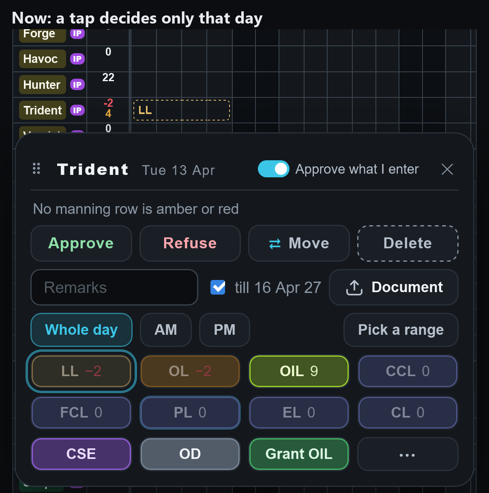</button>
      <button class="pic" type="button" aria-label="Enlarge: version 2, whole leave">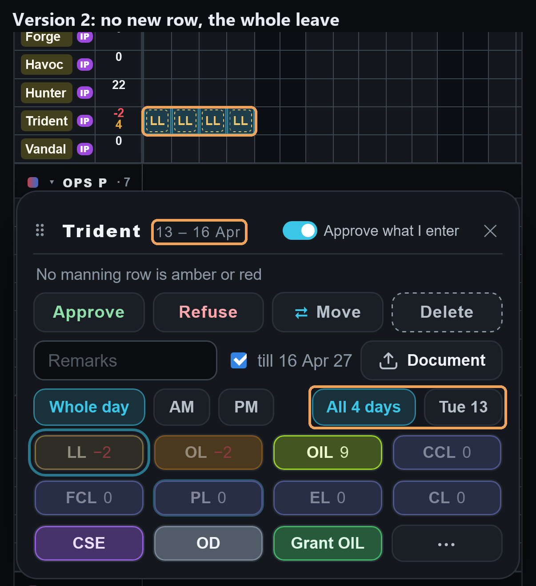</button>
      <button class="pic" type="button" aria-label="Enlarge: version 2, one day">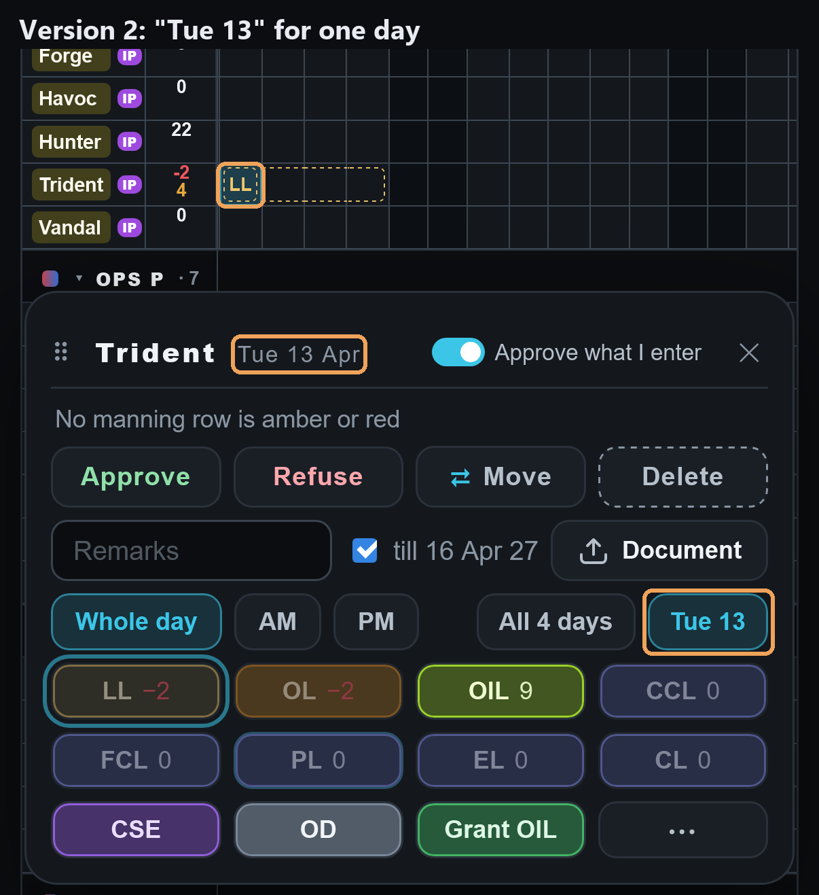</button>
    </article>

    <article class="card" id="q23">
      <div class="head"><span class="num">23</span><h3>A check only your iPhone can make</h3><span class="rec fix">Please look</span></div>
      <p class="why">Approve and Refuse now use your drawing's letters (your answer 18). In the test browsers that keeps every date on one line at your phone's width. The app uses your phone's own letters, which only your phone shows, so please open Approvals on your iPhone and check that the half-day dates, such as "23 Jan AM ›", stay on one line. On GitHub's machines, whose letters are wider, those two still break.</p>
    </article>
    <article class="card">
      <h3>Readings to strike</h3>
      <p class="why">R12 a member never replaces another man's bid · R13 a member taking back his own bid is a line in the change history · R14 his own filing over his own bid leaves no notice · R15 an admin re-typing a member's bid tells him nothing · R16 "Placed" keeps who placed the first bid · R17 "New" counts what others placed since you last looked · R19 one leave keeps one approver · <b>new tonight:</b> R20 a man's leave is refused only on days from his posting-out date on, whether or not the posting has run; a day before it approves (your D1436, as one rule in every window) · R21 a man deleted on Admin → Users keeps the old refusal of his leftover pending leave ("Posted out — refuse or delete it"). <b>New:</b> R22 on a phone, a month's chip stays (dimmed) while a request of that month you just decided is still on the list, so the list never moves under your finger; it goes when you pick another filter or leave. Say the number of any you want the other way.</p>
    </article>
  </section>

  <section>
    <h2>Built this morning (your answers and your video)</h2>
    <article class="card"><div class="head"><span class="num">24</span><h3>The ring on the day you jump to is cyan</h3></div><p class="why">It matches the date ringed above it (your D1449). The Scheduler Board and the Inputs pages keep the app's blue.</p><button class="pic" type="button" aria-label="Enlarge: cyan ring">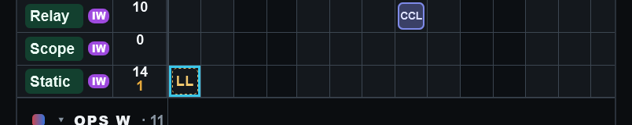</button></article>
    <article class="card"><h3>Your bell says when someone changes your bid's kind</h3><p class="why">Your D1460: an admin changing a member's pending LL to OL now tells him: "LL bid changed to OL". His own change tells nobody, and an Undo takes the unread line.</p><button class="pic" type="button" aria-label="Enlarge: bell">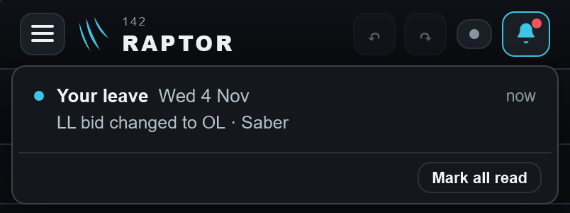</button></article>
    <p class="match">Also fixed from your video: OIL from Approvals no longer flashes the grid; the grid comes back drawn after Approvals, never striped; and a period picked on Approvals now lands the grid on that period's first day.</p>
  </section>

  <section>
    <h2>Built tonight (your answers 17–22)</h2>
    <article class="card"><div class="head"><span class="num">20</span><h3>The shorter top of Approvals on a phone, as drawn</h3></div><p class="why">It measures exactly as the drawing: 63 points saved with two months holding requests.</p><button class="pic" type="button" aria-label="Enlarge: top">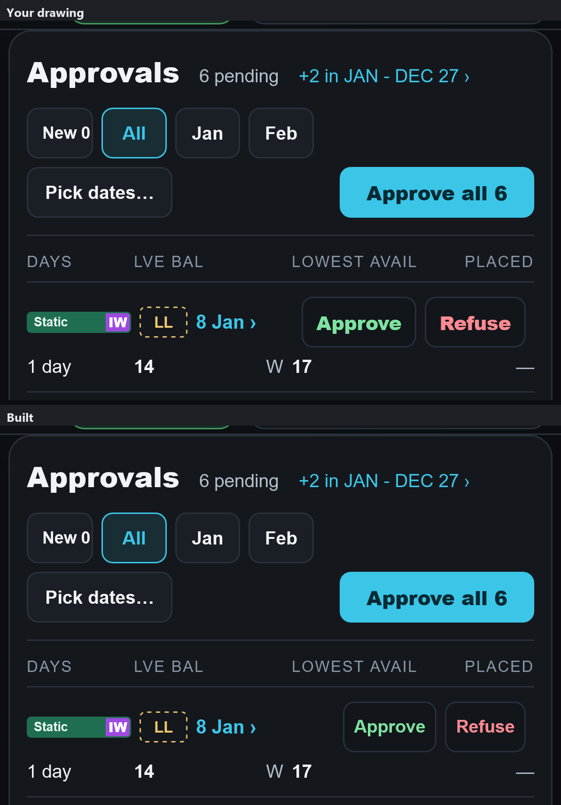</button></article>
    <article class="card"><div class="head"><span class="num">21</span><h3>The slim bar in your drawings' darker grey</h3></div><button class="pic" type="button" aria-label="Enlarge: bar phone">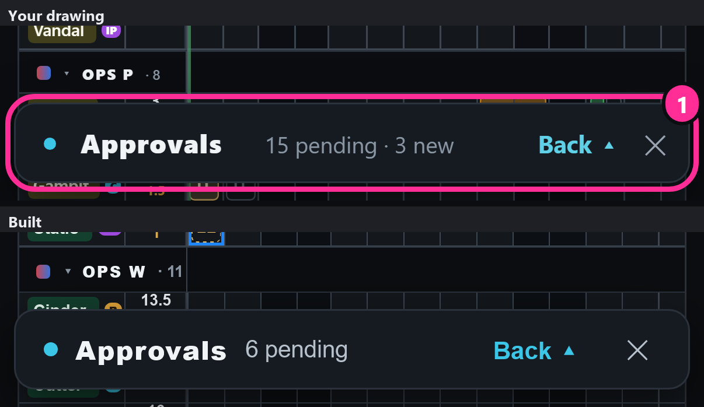</button><button class="pic" type="button" aria-label="Enlarge: bar desktop">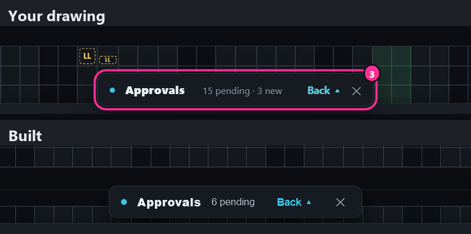</button></article>
    <p class="match">22: "posting out 1 Mar · Overseas Sqn" kept, as you chose.</p>
    <article class="card">
      <div class="head"><span class="num">17</span><h3>The phone's slim bar, back to your drawing</h3></div>
      <p class="why">No cyan outline, "Back ▴" as plain words, a plain ✕, "6 pending" with no dot before it; now the drawing's size and place too (8 points in from each side, 46 tall).</p>
    </article>
    <article class="card">
      <div class="head"><span class="num">18</span><h3>Approve and Refuse in your drawing's letters, on a phone</h3></div>
      <button class="pic" type="button" aria-label="Enlarge: phone buttons">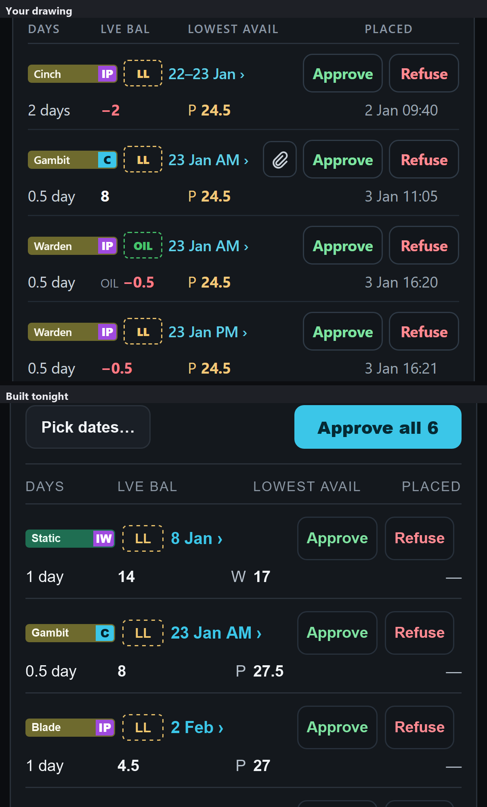</button>
    </article>
    <article class="card">
      <div class="head"><span class="num">19</span><h3>The changes window's bar on a phone, the same plain look</h3></div>
      <p class="why">"Show ▴" as plain words, a plain ✕. It also read "History on· 0 changes", the space swallowed; now "History on · 0 changes".</p>
      <button class="pic" type="button" aria-label="Enlarge: changes bar">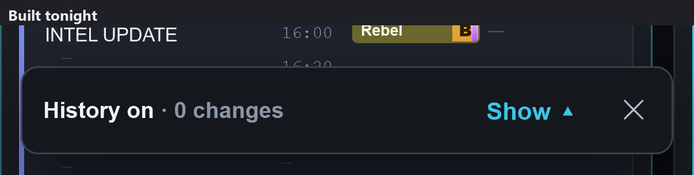</button>
    </article>
    <article class="card">
      <h3>On a narrow phone, "LOWEST AVAIL" ran into "PLACED"</h3>
      <p class="why">At 360 wide the two headings touched. "LOWEST" now sits over "AVAIL" there; on your phone it stays on one line.</p>
      <button class="pic" type="button" aria-label="Enlarge: headings at 360">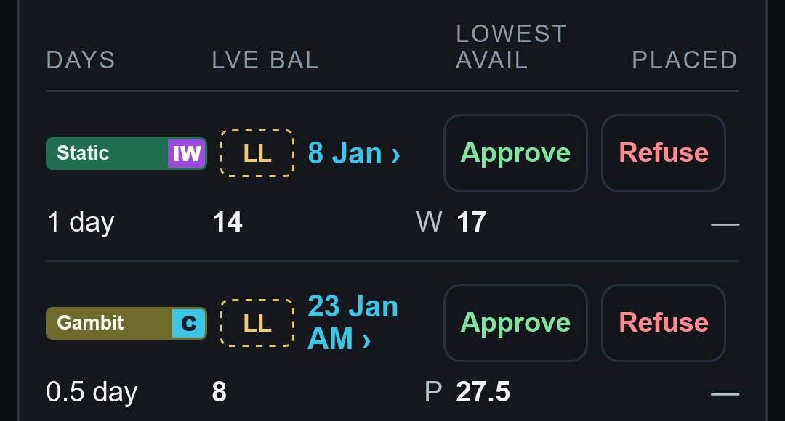</button>
    </article>
  </section>

  <section>
    <h2>Fixed tonight (found by the re-walk and two code reads)</h2>
    <article class="card"><h3>The wrong half of a day decided</h3><p class="why">With a man's afternoon leave already approved, approving his morning and then pressing Refuse or the lit "Approved" changed the afternoon. Both code readers found it. Now only the half you pressed changes, and his bell says the right thing.</p></article>
    <article class="card"><h3>Pick dates… open: a press approved another man's request</h3><p class="why">On a phone, the press closed the calendar, the list moved up, and the line that arrived under your finger was approved. Now a press outside the open calendar only closes it.</p></article>
    <article class="card"><h3>Undo after changing your mind</h3><p class="why">Approve, then Refuse, then Undo left the line showing "Refused" while the leave was approved again. The line now always shows what the leave holds, after every Undo, Redo or change on the grid.</p></article>
    <article class="card"><h3>Posting out: one rule, one reason, everywhere</h3><p class="why">The bid window refused leave after a posting-out date with the wrong reason ("something else is on that time"), and approved what Approvals refused once a posting had run. Every window now refuses alike, with "He posts out on 15 Jan: refuse or delete it".</p></article>
    <p class="match">Also fixed: a finger dragged from the foot of the bell no longer scrolls the page behind; leaving the Leave War from Approvals no longer leaves the grid drawing the whole year in the background; an unread "approved again" line goes with the next Undo; a hand-made command can no longer borrow another bid's "placed" time; when you last opened Approvals is saved under its own name for the database. Each was made to fail by a test first. Three fresh readers then checked the fixes themselves, round by round; one round's fix had reopened the "Pick dates" fault for a tap on the empty space beside the calendar, and that was fixed too. A walker pressed every case by finger.</p>
  </section>
</main>
<dialog id="zoom" aria-label="Picture, full size"><button class="close" type="button" id="zoomClose">Close</button>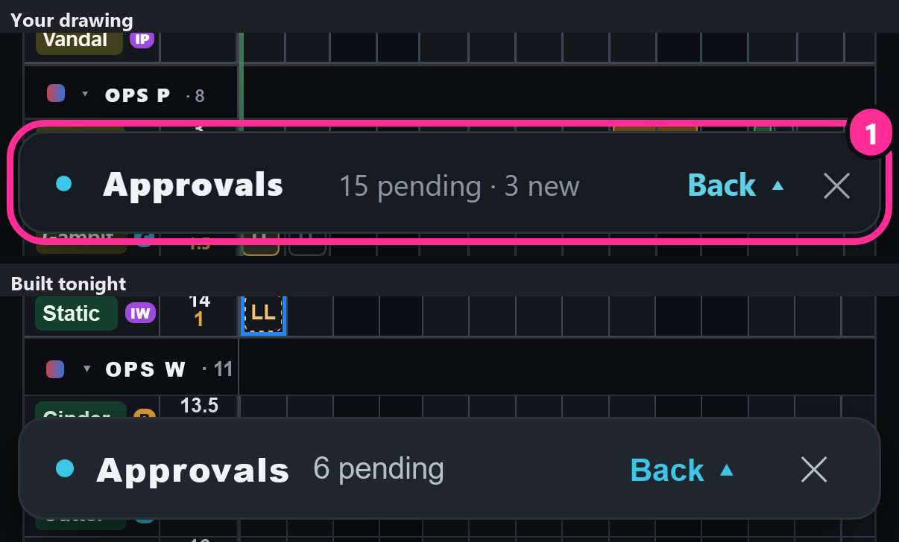</dialog>
<script>
const dlg = document.getElementById('zoom'), big = document.getElementById('zoomImg')
let opener = null
document.querySelectorAll('.pic').forEach(b => b.addEventListener('click', () => {
  const im = b.querySelector('img'); big.src = im.src; big.alt = im.alt; opener = b
  try { dlg.showModal() } catch (e) { dlg.setAttribute('open', '') }
}))
const shut = () => { dlg.close ? dlg.close() : dlg.removeAttribute('open') }
document.getElementById('zoomClose').addEventListener('click', shut)
dlg.addEventListener('click', e => { if (e.target === dlg || e.target === big) shut() })
dlg.addEventListener('close', () => { if (opener) opener.focus() })
</script>
